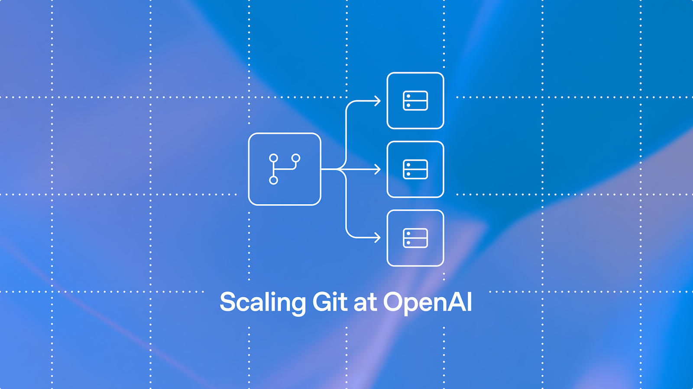
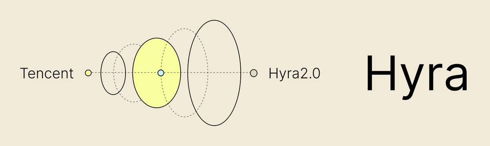
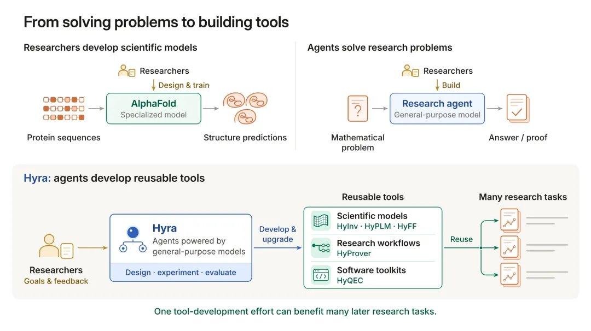
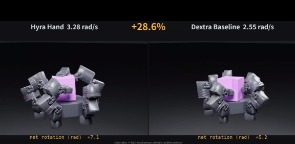
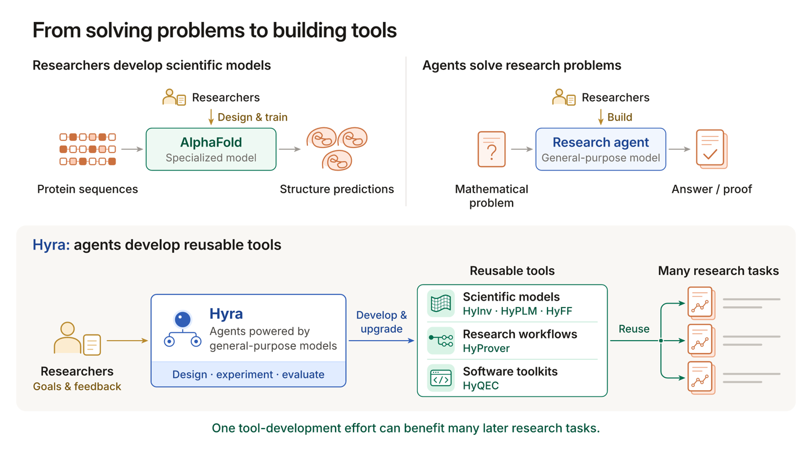
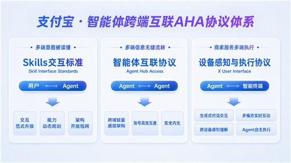

AI Intelligence Daily · 2026-11-03（周二）
今日一句话判断
Anthropic 公开 Message Threads 服务端会话缓存公测（短闲置过期、非 ZDR、多云托管可用），OpenAI 工程博客披露 Codex 规模 Git 后端 Pando（约 10 周用 Codex 建成、推上游），腾讯混元 Hyra 2.0 AutoResearch 官宣并开源结果仓——同窗支付宝 AHA 获乌镇场景奖、OpenAI LifeVal 个人助理基准上线、Northflank 事故升 Monitoring 并披露 CVE-2026-98432。 desktop_shipping=0。对你两条主线：长程 Agent 会话状态（Threads 服务端缓存 vs Super-agent/Hyra 的持久队列与 Review）与工程基础设施（Pando 级并发 Git / PaaS 密钥面）同时加压；AHA 奖项是 Agent 互联产业认可而非新协议 GA。
专栏一｜新闻
本栏结构：
- 国际头条：Anthropic Message Threads 公测（API / AWS / Foundry / Google Cloud Anthropic managed）
- 国际头条：OpenAI Pando — Scaling Git at OpenAI（Codex 规模并发推送后端）
- 国内头条：腾讯混元 Hyra 2.0 AutoResearch（watchlist 181 吸收；非 Desktop）
- 国内中栏：支付宝 AHA 获乌镇「新耀」场景奖（A2A+MCP+A2UI；产品已于 8 月上线）
- 国际中栏：OpenAI LifeVal 日常个人助理基准
- 国际 UPDATE：Northflank 178 → Monitoring + CVE-2026-98432（仍非 RESOLVED；旁注 Trigger.dev 11-01 子集 org env）
- 国内短讯：CodeBuddy Code 2.179.3（托盘/企业 preReadDetection/MCP OAuth 修复）
- 不升格：MiniMax CDN 仍 3.1.10；DeepSeek Super-agent 无新提交（星标续涨见开源雷达）；OpenAI Grid Protectors / Anthropic Residency / MsftSecIntel CVE 浓度分析 → near-miss；177 Anthropic 仍无独立声明（本报未复核 VS Marketplace 滞后）
排序依据：重要度 → 用户相关性 → 时效。
1. Anthropic Message Threads 公测：服务端短时会话缓存，加速长程 Agent 请求
强A · NEW · 国际 · B/C/D · Agent 会话 / TTFT · watchlist 182 · @ClaudeDevs 2026-11-02 19:06:08Z · articles Date Nov 2 · 非 Desktop shipping
发生了什么（事实）
- @ClaudeDevs 2026-11-02 19:06:08Z + claude.com/resources/articles/message-threads + platform docs：Message Threads 进入 public beta；beta header
message-threads-2026-08-12。 - 机制：服务端维护短生命周期会话缓存；客户端可只发新消息并带
previous_message_id，避免每次重传整段历史。闲置约 5 分钟过期，删除窗口约 ≤1 小时。官方明确：NOT ZDR（不满足 Zero Data Retention）。 - 可用面：Claude API + AWS + Microsoft Foundry + Google Cloud Anthropic managed。文称 Claude Code 多数场景默认开启；对 500k–1M token 量级请求，宣称中位 TTFT 约 −35%；token 用量不变（服务端仍完整读取上下文）。
- Anthropic
/news当日「Latest news」日期占位不等于新稿；本条以 articles + @ClaudeDevs + platform docs 互证。
图 1 · Message Threads 文章 OG · 来源：claude.com/resources/articles/message-threads

图 2 · @ClaudeDevs 帖视频缩略图 · 来源：X / ClaudeDevs
我的判断
- 强A。把「长上下文重复上传」从客户端工程债变成平台原语——对 Cloud Agent / 多轮 Coding Agent 的首 token 延迟与带宽直接相关。
- 约束必须写进选型：非 ZDR、短闲置即失效 → 不能当持久 Memory；与 DeepSeek Super-agent「持久状态」叙事互补而非替代。
未来影响
- 厂商竞争点从「更大 context 窗」外溢到「会话缓存 / 增量消息协议」；合规团队会追问缓存驻留与租户隔离。
对智能体互联网
previous_message_id类续话句柄可映射为跨请求委托凭证的弱形态；但过期与非 ZDR 限制其作为身份/审计锚点的资格。
对 Work·Agent 引擎
- Harness 可评估：何时走 Threads 减 TTFT、何时必须本地全量重放以满足审计/ZDR；勿默认「开了 Threads = 有了 Memory」。
建议动作
- 读 articles + docs；在沙箱对 500k+ 会话测 TTFT 与失败重试（过期后须全量重发）。
- 合规清单显式标注 非 ZDR；企业默认策略与 ZDR 租户分流。
- 对照自研是否已有等价的服务端 conversation cache / message cursor。
来源：articles/message-threads · platform docs · @ClaudeDevs 2026-11-02 19:06:08Z · platform release notes Nov 2
2. OpenAI Pando：面向 Codex 规模并发推送的 Git 兼容后端
强A · NEW · 国际 · C/B/H · 工程基础设施 / 源码控制 · watchlist 183 · openai.com Engineering · RSS pubDate Mon 02 Nov 2026 15:30:00 GMT
发生了什么（事实）
- openai.com/index/scaling-git-at-openai（Engineering；RSS pubDate 15:30:00 GMT）：介绍内部 Git 兼容后端 Pando，服务 Codex 规模高并发 push；叙述中位 push 延迟约 5× / ~80% 改善量级；Git 数据量级约 PB/日；强调因果一致性、
packfile-uri等路径；称约用 Codex 在 ~10 周建成，并向上游 Git 贡献。 - 本条是工程基础设施披露，不是新模型、也不是 Desktop/Work Agent 客户端发船。

图 3 · Scaling Git at OpenAI 文 OG · 来源：openai.com
我的判断
- 强A。Agent 舰队写代码的瓶颈常在「仓库并发与对象存储」而非模型本身；OpenAI 把内部解法公开到可对照的架构叙事，对自建 Cloud Agent Runtime / monorepo 很有参照价值。
- 「用 Codex 建 Pando」是元叙事，勿外推为「人人 10 周可复刻」——缺独立基准与开源仓。
对智能体互联网：多 Agent 并行改同一仓时，发现/委托层之外还需要源控因果一致；否则互联编排会在 merge 冲突与损坏 pack 上崩。
对 Work·Agent 引擎：评估 monorepo push 队列、pack 协商与对象去重是否成为 fleet 吞吐上限；关注上游 Git 贡献落点。
建议动作：通读工程文因果一致性与 packfile-uri 段；对照自研 Git 网关/镜像是否有并发写热点。
来源：Scaling Git at OpenAI · OpenAI RSS 2026-11-02 15:30 GMT
3. 腾讯混元 Hyra 2.0 AutoResearch：Overall / Mission / Worker + 结果仓开源
强A · NEW · 国内 · B/C/H/A/K · AutoResearch / Harness · watchlist 181 · @TencentHunyuan 2026-11-02 10:14:21Z · desktop_shipping=0
发生了什么（事实）
- @TencentHunyuan 2026-11-02 10:14:21Z + 官页 hy.tencent.com/research/hyra2（SPA）与 hyra 系列页：发布 Hyra 2.0 AutoResearch。架构叙述含 Overall / Mission / Worker、持久队列、Research Board、独立 Review Worker、Books 知识沉淀与 skill 蒸馏；强调「造工具」而非只刷题。
- GitHub
Tencent-Hunyuan/Hyra-results：截稿约 ★184；2026-11-02 推送（约 14:19Z 一带）含 HyInv / HyPLM-Flash / HyFF 与数学等结果叙述（权重/代码以仓内为准）。 - 国内媒体：IT之家 ithome.com/1/021/266.htm（约 21:08 CST）及同花顺/一财/凤凰网等转述。
- 不是 Work Desktop / Coding Desktop 新客户端发船；属科研 AutoResearch 线。快讯 11-02 19:21 已标 near-miss → 本日报全文吸收。

图 4 · 混元官方 X 配图 1 · 来源：@TencentHunyuan

图 5 · 混元官方 X 配图 2 · 来源：@TencentHunyuan

图 6 · IT之家原文配图 1 · 来源：ithome.com

图 7 · IT之家原文配图 2 · 来源：ithome.com
我的判断
- 强A。与 DeepSeek Super-agent（180）同属「多角色 + 持久队列 + 独立评审」公开模块图，但场景偏科研闭环与工具生成；对 Agent Internet 的 Mission/Worker 分层与 Review 闸门可对照。
- 官页 SPA 正文稳定性与「是否另有开源 harness 仓」仍观察中；结果仓 ≠ 完整可复现研究操作系统。
对智能体互联网：Overall 调度 + Mission 分解 + Worker 执行 + Review 独立面，可映射为跨 Agent 委托与验收协议草图。
对 Work·Agent 引擎：Research Board / Books / skill 蒸馏对「长期知识沉淀」产品有直接借鉴；勿与 Desktop GA 混淆。
建议动作
- 对照 180：Router–Worker–Watchdog vs Overall–Mission–Worker–Review。
- 抽读 Hyra-results README 与权重许可；评估是否值得做科研 Agent 对照实验。
- 盯官页是否补稳定非 SPA 文档与独立 harness 开源。
来源：X 帖 · hyra2 · Hyra-results · IT之家 · 快讯 .scan-2026-11-02-1921.md
4. 支付宝 AHA 获乌镇「新耀」场景奖：A2A + MCP + A2UI，账号锚点跨端协同
A−/B+ · NEW/UPDATE · 国内 · E/F · Agent 互联 · 产品 2026-08 已上线 · 奖项 ≠ 新协议 GA
发生了什么（事实）
- IT之家 ithome.com/1/021/218.htm（2026-11-02 17:57 CST）：支付宝 AHA（Agent Hub Access） 获乌镇世界互联网大会「新耀」场景奖。叙述要点：协议栈 A2A + MCP + A2UI；以支付宝账号为锚；跨端协同；参编《人工智能智能体互联》国标指导性技术文件。
- 产品本身据报道 2026 年 8 月已上线——本条主事件是产业奖项/认可，不是新协议突然 GA。
图 8 · IT之家 AHA 配图 1 · 来源：ithome.com

图 9 · IT之家 AHA 配图 2 · 来源：ithome.com
我的判断
- A−/B+。对「智能体互联网」主线有产业信号价值（账号锚 + 多协议栈 + 国标参编），但须压实：奖项 ≠ 互操作已统一；公开规格深度仍依赖后续一手文档。
建议动作：把 AHA 标为国内 Agent Hub 对照样本；追官方协议说明与 A2UI 公开面；勿写成「国标已强制落地」。
来源：IT之家
5. OpenAI LifeVal：日常个人助理基准（ATUS/MTUS + 问卷）
B+/A− · NEW · 国际 · K/C · 评测 · watchlist 184 · openai.com · @OpenAI 17:27:26Z · RSS pubDate 09:00 GMT
发生了什么（事实）
- openai.com/index/lifeval（RSS 09:00 GMT）+ @OpenAI 17:27:26Z：发布 LifeVal——面向日常个人助理场景的基准，数据来自 ATUS/MTUS 时间使用调查 + 3995 人问卷；覆盖 browser / computer use / connectors 等。
- 官方叙述含自报样例高分区间（约 90–100% 量级表述，以原文为准）。第三方笔记称 GPT-6 Astra 均奖励约 80.6% vs GPT-5.2 49.3% 等——任务未完整公开到可独立复跑 → 本报将第三方分数标为判断慎用，不作硬基准入库。
图 10 · LifeVal 文 OG · 来源：openai.com/index/lifeval
我的判断
- B+/A−。个人助理 / Computer Use 评测缺口真实存在；有官方基准总好过只有演示。但在任务与评分脚本未开放前，外推「Astra 碾压」需克制。
建议动作：读官方方法学；观察是否开源任务包；内部 Computer Use 回归可预留 LifeVal 对齐位。
来源：LifeVal · @OpenAI 2026-11-02 17:27:26Z
6. Northflank：Identified → Monitoring；CVE-2026-98432；仍促全量轮换
A− · UPDATE · 国际 · G/C/F · PaaS 凭证 · watchlist 178 · Monitoring @ 2026-11-02 11:09 UTC · 仍非 RESOLVED
发生了什么（事实）
- status.northflank.com：2026-11-02 11:09 UTC 步进至 Monitoring（快讯 19:21 near-miss → 本报吸收）。官方叙述要点：攻击向量约在首警 1 小时内遏制；独立取证协同中；称 running workloads / 数据未见被访问；证据指向控制面 secrets；已在 fleet（含 BYOC）打补丁 CVE-2026-98432；仍促轮换 AI/云/支付等密钥；拟确认后发 RCA；页面仍非 RESOLVED。
- 旁注（非同事件、合看 PaaS 线）：Trigger.dev security incident（文标 Nov 1；HN 热度延至 Nov 2）称子集 org 环境变量遭未授权访问——作 continuum 对照，不另立 S 事件。
我的判断：A− UPDATE——从 Identified 到 Monitoring 是实质进展，但缺完整 RCA 与 RESOLVED；Cloud Agent 密钥轮换纪律不变。
建议动作：仍用 Northflank 者按状态页完成轮换与账单核对；关注 CVE-2026-98432 技术细节与 NVD；PaaS env「假定已解密」继续写入演练。
来源：Northflank status · 快讯 .scan-2026-11-02-1921.md · Trigger.dev 事故博文（旁注）
7. 短讯：腾讯 CodeBuddy Code 2.179.3（托盘 / 企业预读检测 / MCP OAuth）
B+/A− · UPDATE · 国内 · C/G · Coding Agent CLI（changelog 含 Desktop 行为）· npm 2026-11-02T17:30:33Z · changelog 日期 2026-11-03 · 非 desktop_shipping
发生了什么（事实）
@tencent-ai/codebuddy-code@2.179.3（相对 11-01 的 2.179.1 / 快讯中途 2.179.2）。CHANGELOG 要点：Win/Linux 标题栏菜单 + 托盘，关闭默认最小化到托盘；企业 preReadDetection（读文件前）；sandbox 跟随企业黑名单/网络/备份策略；修复 MCP OAuth 仍显示 needsAuth、harness 业务码、已退出会话 hover 拉起进程、频道任务板依赖卡住、--serve进程标题等。
我的判断：B+/A−。企业策略与 MCP OAuth 修复对 Work 引擎有用；托盘是增量桌面行为，不是新 Desktop 客户端 GA → desktop_shipping=0。
来源：npm · 包内 CHANGELOG.md
8. 不升格 / near-miss 脚注
- MiniMax CDN 仍 3.1.10（11-01 已收；changelog Desktop 已追记）→ 不升格 shipping。
- DeepSeek
dsh-superagent-prototype：无新提交（仍 10-31 12:05Z）；星标见开源雷达 → 不升格新闻。 - OpenAI Grid Protectors（RSS 15:00Z，电网弹性）：非模型/Desktop。
- Anthropic Residency（人事帖）：默认不入栏。
- MsftSecIntel CVE 利用浓度分析：非 177 随访 IR。
- 177：Anthropic 仍无独立事故声明（本报未另复核 VS Marketplace 版本滞后）。
专栏二｜话题热议
T1. Hyra 2.0 × DeepSeek Super-agent：国内「多角色科研/持久 Agent」同周对照
国内为主 · B/C/H · 强相关
- 在说什么：混元官宣 Hyra 2.0 + 结果仓；与 10-31/11-01 DeepSeek Super-agent 模块图形成同周对照（调度分层、评审、知识沉淀）。
- 表述纪律：两者皆非 Desktop 发船；Hyra 偏 AutoResearch，Super-agent 偏 Harness 理念+研究原型。
T2. HN：Weight-space programming（Astra 读写权重改进 Qwen）
国际 · A/K · 可选热议 · 1734 pts
- rikiyat.github.io/blog/weight-space-programming · HN Algolia 核验约 1734 分（story created ≈ 2026-11-02 18:21Z）。讨论「在权重空间编程」类研究叙事；非厂商发船。作话题信号，不升格新闻 S/A。
T3. PaaS 密钥面：Northflank Monitoring + Trigger.dev 子集 env
国际 · G/C
- 状态页 Monitoring 步进与 Trigger.dev Nov 事故博文同窗热议；过滤成「轮换 + 假定解密」操作纪律，避免标题党「全网沦陷」。
专栏三｜开源雷达
头条 continuum：dsh-superagent-prototype 星标狂飙、无新提交
国内 · B/C/F · watchlist 180 · 非新闻升格
- pushed_at 仍 2026-10-31T12:05:51Z；截稿 ★13,082（Daily 11-01 为 2,293）。README 约束不变：research prototype，非正式产品。热度记雷达，不重复当发船新闻。
版本基线（必收）
| Pin | 本轮 | vs Daily 11-01 | 备注 |
|---|---|---|---|
@tencent-ai/codebuddy-code | 2.179.3 | ↑（经 2.179.2） | npm 11-02 17:30Z |
@anthropic-ai/claude-code | 2.1.316 | 持平 | npm+Open VSX |
@openai/codex | 0.166.0 | 持平 | |
@google/gemini-cli | 0.66.0 | 持平 | nightly≠latest |
@moonshot-ai/kimi-code | 2.4.1 | 持平 | |
@minimax-ai/code | 0.7.4 | 持平 | |
@modelcontextprotocol/inspector | 2.13.0 | 持平 | |
opencode-ai | 1.19.5 | 持平 | |
@deepseek-ai/dsh | 0.2.1-rc.5 | 持平 | |
| MiniMax CDN Win/Mac | 3.1.10 | 相对 11-01 CDN 已到 | 不升格 shipping |
Tencent-Hunyuan/Hyra-results | ★184 | NEW 结果仓 | 见新闻 3 |
deepseek-ai/dsh-superagent-prototype | ★13,082 | +10,789 vs 11-01 | 无新提交 |
desktop_work_agent_shipping = 0（无一线新 Desktop GA；CodeBuddy 托盘=增量；Hyra/Pando/Threads/LifeVal/AHA 奖 ≠ Desktop shipping）。
Continuum 星标 Δ（vs Daily 11-01 快照）
| 项目 | 星标（约今日） | Δ | 看点 |
|---|---|---|---|
| deepseek-ai/deepseek-harness | 269,577 | +2,153 | |
| anomalyco/opencode | 224,108 | +504 | |
| deepseek-ai/DeepInfer | 25,026 | +373 | |
| NVIDIA/OpenShell | 20,977 | +130 | |
| opensandbox-group/OpenSandbox | 16,399 | +54 | |
| humanlayer/humanlayer | 12,766 | +33 | |
| modelcontextprotocol/servers | 91,751 | +31 | |
| Tencent-Hunyuan/Hy-Memory | 1,919 | +20 | |
| microsoft/mxc | 3,079 | +15 | |
| Tencent-Hunyuan/Hyra-results | 184 | NEW | AutoResearch artifacts |
| deepseek-ai/dsh-superagent-prototype | 13,082 | +10,789 | 无新提交 |
重点事件新进展
181 · 腾讯混元 Hyra 2.0（快讯 near-miss → 日报吸收）
- 此前：快讯 11-02 19:21 IDENTIFIED / 待 Daily。
- 今日新增：日报全文升格 NEW；结果仓 ★184；媒体 IT之家等。
- 判断是否发生变化：是——从 near-miss 落地为国内强A AutoResearch 公开模块图。
178 · Northflank
- 此前：Daily 11-01 仍 Identified；轮换面扩至 DB/对象/消息。
- 今日新增：Monitoring@11:09Z；CVE-2026-98432；独立取证；仍促轮换；未 RESOLVED。
- 判断是否发生变化：缓解与归因叙述升级，结案未完成。
180 · DeepSeek Super-agent prototype
- 此前：Daily 11-01 NEW ★2,293。
- 今日新增：无新提交；★≈13,082。
- 判断是否发生变化：热度 continuum，产品化判断未变。
177 · Claude Code / Cursor Marketplace
- 今日新增：本窗无 Anthropic 独立声明核验到新稿；CLI 仍 2.1.316。
- 判断是否发生变化：否（观察项保留）。
MiniMax Desktop
- CDN/changelog 3.1.10 相对已收版本无新发船叙事 → 仍不升格。
今天正在形成的趋势
- 长程 Agent 的「状态」分裂为三路：平台短时会话缓存（Threads）、科研/Harness 持久队列（Hyra / Super-agent）、评测侧日常助理基准（LifeVal）——选型须先问清过期、ZDR 与验收闸门。
- Agent 舰队倒逼源控基础设施（Pando）——并发 push / 因果一致成为一级工程议题。
- 国内 AutoResearch 与 Harness 理念同周公开模块化——可对照而非可混为一谈。
- Agent 互联进入「奖项与国标文件」阶段（AHA）——信号强于可互操作证明。
- PaaS 控制面密钥事故进入 Monitoring/补丁 CVE 阶段——轮换纪律产品化。
对智能体互联网最值得吸收的东西
- Mission/Worker + 独立 Review（Hyra）与 Router/Worker + Watchdog（Super-agent）对照——委托、执行、验收三角。
- 账号锚点 Hub（AHA）+ A2A/MCP/A2UI 叙事——国内互联落地样本，仍待公开规格深度。
- 会话续话句柄（previous_message_id）的能力与极限（非 ZDR、短过期）——勿误当跨域身份凭证。
对 Work / Agent 引擎最值得吸收的东西
- Message Threads：TTFT vs 合规（ZDR）分流策略——长上下文 Agent Loop 的平台能力清单项。
- Pando 级 Git 并发叙事——Cloud Agent / monorepo 写放大时的隐藏上限。
- CodeBuddy 企业 preReadDetection + sandbox 策略跟随 + MCP OAuth 修复——企业 Harness changelog 可抄段。
值得继续跟踪
- 事件：182 Message Threads（新建） · 观察：GA；ZDR 选项；过期策略变更；他厂等价 API。
- 事件：183 Pando（新建） · 观察：上游 Git 贡献合并；是否开源/对外服务。
- 事件：181 Hyra 2.0 · 观察：官页稳定文档；独立 harness 仓；与 180 对照实验。
- 事件：184 LifeVal（新建） · 观察：任务是否开源可复跑；他厂跟进。
- 事件：178 Northflank · 观察：RCA / RESOLVED；CVE-2026-98432 NVD。
- 事件：180 Super-agent prototype · 观察：新提交/产品化；星标热度冷却后是否有实质更新。
- 事件：177 · 观察：Anthropic 独立声明；VS Marketplace 版本同步。
- 事件：AHA · 观察：官方协议文档与 A2UI 公开面。
- 到期：Kimi K3.1 Pro 权重（129）→ Nov 4；GitHub Fusion 折扣 → Nov 30；Foundry Copilot harness 计费 → Dec 1。
未来信号
- 「短时服务端 Threads」与「长时 Research/Harness 队列」可能组合成默认双层状态机：热路径缓存降 TTFT，冷路径持久队列保任务；中间的一致性与审计仍是空白。
- AutoResearch 造工具若与 Coding Agent Skill 蒸馏打通，可能出现「科研 Worker 产物 → 生产 Skill」的供应链，需预留评审与 provenance。
价格 / 订阅雷达
- DeepSeek Search/Fetch 按次计费：自 11-01 00:00 CST 已生效（见 Daily 11-01）；本窗无新价目变更核验。
- Rosalind / Message Threads：Threads 为延迟优化、官方称 token 用量不变；未见单独 Threads 加价条目（以账单与 docs 为准）。
- Claude Max→Ultra 等：本窗无新官方变更核验。
信源与方法（vendor-check 摘要）
- P0 命中：anthropic / ClaudeDevs（Message Threads）、openai（Pando + LifeVal；Grid Protectors near-miss）、tencent-hunyuan（Hyra 2.0 + CodeBuddy 2.179.3）、cloud-hosting（Northflank Monitoring）、国内媒体 IT之家（AHA / Hyra）。
- P0/P1 无新 Desktop shipping：minimax（CDN 3.1.10 不升格）、cursor、mistral（HF 有动未升格发船）、moonshot、stepfun、deepseek（无新提交）、meta、xai 等。
- 方法：承接
flashes/.scan-2026-11-03-daily-intl.md+ 11-02 多轮快讯 SILENT 日志；官方站/RSS/articles/docs + 官方 X + IT之家交叉 + npm CHANGELOG +gh星标；视频默认不采集；配图仅原文/官方/媒体真实附图（本报未用 Northflank 通用状态 OG 凑图）。Daily 11-02 缺文件 → 强制吸收 Hyra/Northflank 等 near-miss。